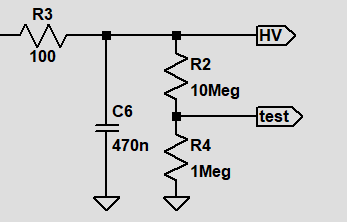
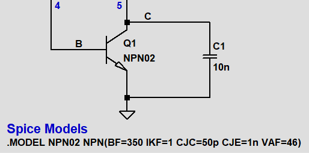

High Voltage Insect Zapper
This is one of those simple circuits for which can be found a lot of very poor explanations. I took one apart and did some looking and testing—now I have the feeling that I have something to say about it. In fact, I have determined empirically that I have far too much to say about it, but what can you do?
Initial Measurements
The first thing we want do is to measure the output voltage. Before that, however, we should have a general idea of the magnitude of the output so we don't accidentally damage a meter. It is useful to remember that the dielectric strength of air is around 3kV per mm. Since the electrode screens on the device are separated by only a couple millimeters, and no arcing occurs spontaneously, we know we aren't dealing with 10's of thousands of volts. But a value of a couple thousand should surprise no one. Since we don't want to try to measure anything bigger than 1000V with the multimeter, we add a 1Meg resistor in series with the 10Meg load resistor.
Measuring across the 1Meg resistor shows a voltage of 165V—ignoring internal resistance of the DMM for the foreseeable future—the full output voltage is around 1.8kV.
Schematic Extraction
Next we want to extract a schematic representation from the physical circuit. This can be accomplished readily using a combination of visual inspection and measurements of resistances and diode drops. Just looking at the PCB inside of one of these devices (purchased from Harbor Freight) reveals three important parts of the circuit: (1) Some type of transformer with 5 pins, (2) Some type of 3 terminal TO-92 package device—revealed to be an NPN transistor upon reading its label, and (3) A string of capacitors and diodes which is most definitely a voltage multiplier.
So what do we have? A self oscillating DC-DC converter of a yet unknown topology. All we have to do to complete the picture is determine the pinouts of the transformer and transistor.
The Transformer
If you are interested in how I approximated the turn counts and everything else, see my Digression on the Transformer page. If not, be comforted that I used a rather dippy technique to reach the values for inductances used in the coupled inductor transformer model which appears in later simulations. The other important thing is the transformer pin-to-pin resistance measurements, summarized int he graphic below:
Please, continue.
The Transistor
Lucky for us, the transistor had a legible label on it—however, we could have determined its pinout by measuring diode drops between pins, assuming none of the other diodes on board were connected in any way that could cause deception. By looking at the device datasheet, it is clear that some behavior deviates from the SPICE default NPN transistor. Now, I could go into another digression about this, but I don't want to do that exactly. Suffice to say that the important parameters were the forward current gain, BE and CB capacitance, early voltage and high current beta roll off. Anyway, the LT Spice drawing below shows how the transistor is hooked up: the blue numbers 4 and 5 correspond to the pins of the transformer as depicted in the transformer graphic.
The Voltage Multiplier
The voltage multiplier section has 4 capacitors and 4 diodes, arranged like this:
A half wave "voltage doubler" is typically shown with two capacitors and two diodes driven by an AC source v(t)=Vmsin(wt), where the amplitude Vm is half of the peak to peak voltage of the AC signal. Invoking the picture above, we say C1 and D1 form a voltage clamp, the output of which approaches v(t)=Vmsin(wt)+Vm. Then C2 and D2 form a peak detector (or half wave rectifier if a load is connected across C2), with an output voltage of near 2Vm—the peak to peak voltage.
We might think to call our multiplier a voltage quadrupler, because it looks like two cascaded doublers... and maybe some people call it that. I prefer to call the 4 capacitor, 4 diode circuit a peak to peak doubler. The reason becomes clear when you consider different kinds of inputs. The first picture below shows node voltages using a sinusoidal input:

Vm is 10, and the output definitely approaches 4Vm... but look at the situation with a unipolar square wave input with a peak to peak variation of 20V:

The output aproaches the same value, while an amplitude which is half of the peak to peak value for this signal is not defined. Side note, with an input that is always greater than 0, you don't need the first clamp section. I hope that clears something up.
Complete Circuit and Simulation
We now know what everything is—the complete circuit can be represented like so:

I have used a coupled inductor transformer model here, which assumes perfect coupling and no core losses—high and low estimated inductor values were chosen for a stepped simulation to observe sensitivity to these values. Copper losses are represented as the measured series resistances, specified for each inductor instance. A more detailed simulation with a non-ideal saturable transformer model will show up sooner or later. Also, I added D5 because it is irresponsible to allow EB breakdown. A transient simulation showing the high voltage output is right here below:
Red: L1=50u, L2=200m; Orange: L1=500u, L2=200m; Yellow: L1=50u, L2=2; Green: L1=500u, L2=2
A couple things to notice: L1 (primary inductance, as well as the first tap inductance of the secondary), has a strong effect on the oscillating frequency, and a relatively weak effect on output voltage (factor of 10 change in L gives 10-20% change in output voltage). The value of L2 seems to have a similarly week effect on the output voltage. Ok... so how does this thing oscillate?
Explanation
Before we start making things up about this circuit, let's simulate what we have with fixed the inductor values and observe terminal voltages and currents. Below is a transient simulation showing collector and base voltages and currents, as well as the voltage at the secondary tap:

One way to figure out how this works is to recognize 4 time intervals—(1) switch open (2) switch closing (3) switch closed (4) switch opening—and to characterize the behavior of the specific devices involved durong those intervals. Another way is to think more abstractly about it, using idealized components, then add in the effects of nonideal device behavior.
Consider the circuit with a perfect voltage or current controlled switch. When the switch is open, no current flows in the primary winding, and when it is closed, the voltage across the winding is the low supply voltage. Viewing the winding as a simple linear inductor, the current through it will be proportional to the integral of that voltage—so we expect to see current increase linearly when the switch is closed. With a perfectly linear transformer and a perfect switch, this would continue indefinitely and cause some multiple of the supply voltage to appear across each secondary winding indefinitely.
To determine if the switch will be open or closed, we look at the input circuit, which consists of the series combination of the low voltage supply, a 3k3 ohm resistor, and the low voltage transformer secondary applied to the control input of the switch. Note that the transformer secondary effectively applies positive feedback to the input. For a current controlled switch, a sufficient current must flow throught this circuit to maintain a closed state. The current is simply this:
\[I_{input} = \frac{V_{sup}+V_{2ndry}-V_{sw}}{3k3\Omega}\]where Vsw is the voltage at the input of the switch control input. So if the switch is initially open, the voltage across the secondary will be nill, and some current will flow, possibly enough to close the switch (more on that in a momnet). And as we said before, if the switch is already closed the secondary voltage will be some multiple of the supply voltage. So if given the abstract perfect switch a truly linear transformer and a perfect low voltage source, if the switch closes, it will get stuck closed forever. But in reality, many things can cause the switch to open again.
Switch Nonidealities
The BJT is not a perfect switch—on the way from cutoff to saturation, the device is a current amplifier with a gain of beta. Also, beta rolls off for large collector currents, and there is series resistance with all terminals.
So, starting from the state of initially open, a small amount of base current will flow through the 3k3 resistor, causing an increase in collector current, and thus a positive voltage to appear across the primary, and similarly the secondary. A positive voltage on the secondary acts to increase the base current. A nice way to say this is that the transformer applies a feedback signal which is the positive derivative of the collector current.
This will bring the device from cutoff, through active mode and into saturation. While saturated, collector current will continue to increase. However, if beta rolls off, the increase in collector current will slow, reducing the voltage fed back to the input which will reduce the input current. And since we have positive feedback, the decrease will speed up and a very large negative voltage will appear across both primary and secondary, shutting off base current entirely and returning the swithc to cutoff, starting the process over. Similarly, if the voltage across the primary is reduced due to the effect of finite collector resistance, the same thing will happen.
Transformer Saturation
Though I didn't model this above, the effect of transformer saturation is the same as beta roll off. For relatively small currents, the transformer can be modeled as approximately linear. In reality, you can only increase the current so much before you no longer get a corresponding increase in flux in the core. Since the secondary voltage is proportional to the rate of change of flux, it will decrease if the core saturates, causing the same transition from saturation to cutoff described above.
So we know how it oscillates. Now why does it generate such a large voltage? Well, this is obvious -- the other secondary has many more turns, and that winding is applied to a voltage multiplier. Easy.